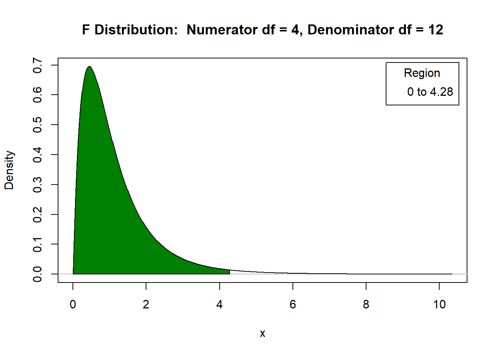
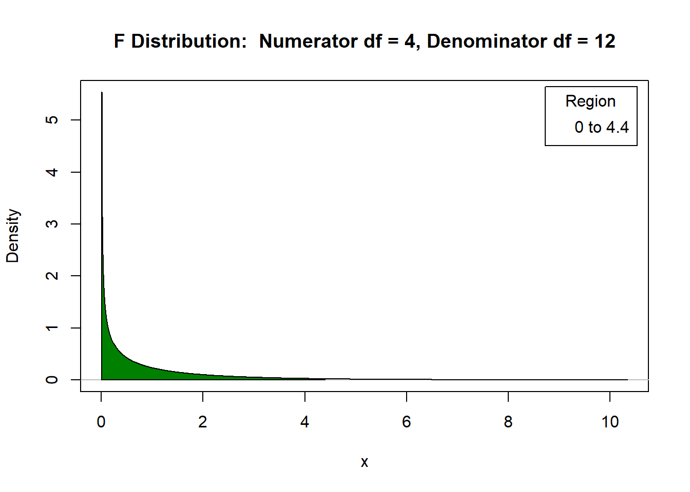

Tabela1: Peso da espiga de milho delimitado por diferentes genótipos
| Tratamentos | 1 | 2 | 3 | 4 | Total | Média |
|---|---|---|---|---|---|---|
| 1 | 5,95 | 6,21 | 5,40 | 5,18 | 22,74 | 5,6850 |
| 2 | 5,07 | 6,71 | 5,46 | 4,98 | 22,22 | 5,5550 |
| 3 | 4,82 | 5,11 | 4,68 | 4,52 | 19,13 | 4,7825 |
| 4 | 3,87 | 4,16 | 4,11 | 4,84 | 16,98 | 4,2450 |
| 5 | 5,53 | 5,82 | 4,29 | 4,70 | 20,34 | 5,0850 |
| Total | 101,41 | 5,0705 |
Assumindo-se que todas as pressuposições para a realização da ANOVA foram atendidas, o teste para as hipóteses:
\[H_0 : \mu_{1} = \mu_{2} = \mu_{3} = \mu_{4} = \mu_{5}\]
\[H_1 : \text{pelo menos um contraste de médias difere de zero}\]
apresentou o seguinte resultado:
#> Analysis of Variance Table
#>
#> Response: prod
#> Df Sum Sq Mean Sq F value Pr(>F)
#> Genotipo 4 5.5078 1.37695 4.2872 0.01644 *
#> Residuals 15 4.8177 0.32118
#> ---
#> Signif. codes: 0 '***' 0.001 '**' 0.01 '*' 0.05 '.' 0.1 ' ' 1#> Carregando pacotes exigidos: car
#> Carregando pacotes exigidos: carData
#> Carregando pacotes exigidos: sandwich
Todo teste de comparações múltiplas é realizado para contrastes entre médias (ou totais).
Definição: Um contraste de médias é definido pela combinação linear das mesmas, ou seja:
\[\text{L} = a_{1}\mu_{1} + a_{2}\mu_{2} + . . . + a_{I}\mu_{I}\]
tal que, \(\sum^I_{i=1} a_i = 0\), para o caso em que todos os tratamentos apresentam o mesmo número de repetições \(J\). | Generalizando, \(\text{L} = a_1\mu_{1} + a_2\mu_{2} + . . . + a_I\mu_{I}\) ,tal que, \(\sum^I_{i=1} n_ia_j = 0\), é um contraste, em que \(n_i\) é o número de repetições do \(i\)−ésimo tratamento.
\[\text{L}_1 = \mu_{1} − \mu_{2}\] \[\text{L}_2 = 2\mu_{1} − \mu_{2} − \mu_{3}\] \[\text{L}_3 = \mu_{3} − \mu_{4}\]
Assim, para o caso específico:
\[\text{L} = \mu_1 - \mu_2 \Rightarrow \hat{L} = \hat{\mu}_1 - \hat{\mu}_2 = \bar{y}_1-\bar{y}_2\]
\[H_0: \mu_i = \mu_{i'} \Leftrightarrow \mu_i - \mu_{i'} = 0\]
\[H_1: \mu_i \neq \mu_{i'} \Leftrightarrow \mu_i - \mu_{i'} \neq 0\]
\[y_{ij} = \mu + \tau_i + e_{ij} = \mu_i + e_{ij},\]
em que:
\(e_{ij} \stackrel{iid}{\sim} N(0, \sigma^2)\).
\(i = 1, . . . , I\) e \(j = 1, . . . , n_i\)
\[\hat{L} = \hat{\mu}_i - \hat{\mu}_{i'}.\] \[\text{E}(\hat{L}) = \mu_i-\mu_{i'}\] Assim,
\[Var(\hat{L}) = \Bigg(\frac{1}{n_i} + \frac{1}{n_{i'}}\Bigg)\sigma^2\]
Hipóteses do teste:
\[H_0: \mu_i = \mu_{i'} \Leftrightarrow \mu_i - \mu_{i'} = 0\]
\[H_1: \mu_i \neq \mu_{i'} \Leftrightarrow \mu_i - \mu_{i'} \neq 0\]
\[t_\text{cal}=\frac{\hat{L} - \text{E}(\hat{L})}{\sqrt{\widehat{\text{Var}}(\hat{L})}} = \frac{\hat{\mu}_i - \hat{\mu}_{i'} - 0}{\sqrt{\Bigg(\frac{1}{n_i} + \frac{1}{n_{i'}}\Bigg)\hat{\sigma}^2}}.\]
\(H_0 : \mu_{1} − \mu_{2} = 0\) versus \(H_1 : \mu_{1} − \mu_{2}\neq 0\)
\(H_0 : \mu_{1} − \mu_{3} = 0\) versus \(H_1 : \mu_{1} − \mu_{3}\neq 0\)
\(H_0 : \mu_{1} − \mu_{4} = 0\) versus \(H_1 : \mu_{1} − \mu_{4}\neq 0\)
\(H_0 : \mu_{1} − \mu_{5} = 0\) versus \(H_1 : \mu_{1} − \mu_{5}\neq 0\)
\(H_0 : \mu_{2} − \mu_{3} = 0\) versus \(H_1 : \mu_{2} − \mu_{3}\neq 0\)
\(H_0 : \mu_{2} − \mu_{4} = 0\) versus \(H_1 : \mu_{2} − \mu_{4}\neq 0\)
\(H_0 : \mu_{2} − \mu_{5} = 0\) versus \(H_1 : \mu_{2} − \mu_{5}\neq 0\)
\(H_0 : \mu_{3} − \mu_{4} = 0\) versus \(H_1 : \mu_{3} − \mu_{4}\neq 0\)
\(H_0 : \mu_{3} − \mu_{5} = 0\) versus \(H_1 : \mu_{3} − \mu_{5}\neq 0\)
\(H_0 : \mu_{4} − \mu_{5} = 0\) versus \(H_1 : \mu_{4} − \mu_{5}\neq 0\)
Tabela 2: Contrastes de médias dos diferentes genótipos de milho
| médias | \(\mu_{2}\) | \(\mu_{3}\) | \(\mu_{4}\) | \(\mu_{5}\) |
|---|---|---|---|---|
| \(\mu_{1}\) | 0,1300 | 0,9025 | 1,4400 | 0,6000 |
| \(\mu_{2}\) | - | 0,7725 | 1,3100 | 0,4700 |
| \(\mu_{3}\) | - | - | 0,5375 | 0,3025 |
| \(\mu_{4}\) | - | - | - | 0,8400 |
\[\text{d.m.s} = t_{(\alpha/2,\nu)}\sqrt{\Bigg(\frac{1}{n_i} + \frac{1}{n_{i'}}\Bigg)\hat{\sigma}^2},\] ou seja,
\[d.m.s. = t(\alpha/2, \text{gl}_\text{Res})\sqrt{\frac{2\times \text{QMRes}}{J}}\]
\[d.m.s. = 2.13\sqrt{\frac{2\times 0.3212}{4}}= 0.8536\]
Tabela 3: Denotando as diferenças minimas significativas sobre os contrastes
| médias | \(\mu_{2}\) | \(\mu_{3}\) | \(\mu_{4}\) | \(\mu_{5}\) |
|---|---|---|---|---|
| \(\mu_{1}\) | 0,1300 | 0,9025* | 1,4400* | 0,6000 |
| \(\mu_{2}\) | - | 0,7725 | 1,3100* | 0,4700 |
| \(\mu_{3}\) | - | - | 0,5375 | 0,3025 |
| \(\mu_{4}\) | - | - | - | 0,8400 |
Tabela 4: Classificação dos tratamentos pelo teste LSD de Fisher
| Genótipo | média estimada |
|---|---|
| 1 | 5,6850 a |
| 2 | 5,5550 ab |
| 5 | 5,0850 abc |
| 3 | 4,7825 bc |
| 4 | 4,2450 c |
\[1-(1-\alpha)^{c} = 1 - (1 - 0,05)^{45} = 0,9006\]
em que c corresponde ao número de comparações.
\[\text{d.m.s.} = t((0,05/10)/2, \text{gl}_{\text{Res}})\sqrt{\frac{2\times \text{QMRes}}{J}}\] \[= 3.29 \sqrt{\frac{2\times 0.3212}{4}} = 1.3185\]
Tabela 5: Denotando as diferenças minimas significativas sobre os contrastes
| médias | \(\mu_{2}\) | \(\mu_{3}\) | \(\mu_{4}\) | \(\mu_{5}\) |
|---|---|---|---|---|
| \(\mu_{1}\) | 0,1300 | 0,9025 | 1,4400* | 0,6000 |
| \(\mu_{2}\) | - | 0,7725 | 1,3100 | 0,4700 |
| \(\mu_{3}\) | - | - | 0,5375 | 0,3025 |
| \(\mu_{4}\) | - | - | - | 0,8400 |
Tabela 6: Classificação dos genótipo pelo teste de LSD de Fisher com correção de BonFerroni
| Genótipo | média estimada |
|---|---|
| 1 | 5,6850 a |
| 2 | 5,5550 ab |
| 5 | 5,0850 ab |
| 3 | 4,7825 ab |
| 4 | 4,2450 b |
\[H_0: \mu_i = \mu_{i'} \Leftrightarrow \mu_i - \mu_{i'} = 0\]
\[H_1: \mu_i \neq \mu_{i'} \Leftrightarrow \mu_i - \mu_{i'} \neq 0\]
Rejeita-se H0 se \[\displaystyle{|\hat{\mu}_i - \hat{\mu}_{i'}| \geq \Delta}\]
em que \[\displaystyle{\Delta = q_{(\alpha, I, \text{glRes})}\sqrt{\frac{\widehat{\mbox{Var}}(\hat{L})}{2}} = q_{(\alpha, I, \text{glRes})}\sqrt{\Bigg(\frac{1}{n_i} + \frac{1}{n_{i'}}\Bigg)\frac{\text{QMRes}}{2}}}\]
Se \(n_i=n_{i'}=J\), então, \(\displaystyle{\Delta = q_{(\alpha, I, \text{glRes})}\sqrt{\frac{\text{QMRes}}{\text{J}}}}.\)
\[\displaystyle{\Delta = q_{(\alpha, I, \text{glRes})}\sqrt{\frac{\text{QMRes}}{J}}}.\]
\[ = 3.29\sqrt{\frac{0.3212}{5}}=1.2375.\]
Tabela 7: Denotando as diferenças minimas significativas sobre os contrastes
| médias | \(\mu_{2}\) | \(\mu_{3}\) | \(\mu_{4}\) | \(\mu_{5}\) |
|---|---|---|---|---|
| \(\mu_{1}\) | 0,1300 | 0,9025 | 1,4400* | 0,6000 |
| \(\mu_{2}\) | - | 0,7725 | 1,3100* | 0,4700 |
| \(\mu_{3}\) | - | - | 0,5375 | 0,3025 |
| \(\mu_{4}\) | - | - | - | 0,8400 |
Tabela 8: Classificação dos genótipos pelo teste de Tukey
| Genótipo | média estimada |
|---|---|
| 1 | 5,6850 a |
| 2 | 5,5550 a |
| 5 | 5,0850 ab |
| 3 | 4,7825 ab |
| 4 | 4,2450 b |
\[H_0: \mu_i = \mu_{i'} \Leftrightarrow \mu_i - \mu_{i'} = 0\]
\[H_1: \mu_i \neq \mu_{i'} \Leftrightarrow \mu_i - \mu_{i'} \neq 0\]
\[\alpha' = 1-(1-\alpha)^{k-1}.\]
O critério de decisão consiste em rejeitar \(H_0\) se
\[\displaystyle{|\hat{\mu}_i - \hat{\mu}_{i'}| \geq D_i},\]
em que
\[\displaystyle{D_i = z_{(\alpha, k, \text{glRes})}\sqrt{\frac{\text{QMRes}}{J}} }\]
e \(k\) é o número de médias envolvidas.
Exemplo Para o exemplo de produtividade de milho as médias ordenadas são:
Tabela 9: médias por genótipo
| Genótipo | média estimada |
|---|---|
| 1 | 5,6850 |
| 2 | 5,5550 |
| 3 | 4,7825 |
| 4 | 4,2450 |
| 5 | 5,0850 |
O primeiro teste a ser realizado é para as hipóteses
\[H_0: \mu_1 = \mu_{4} \Leftrightarrow \mu_1 - \mu_{4} = 0 \qquad \text{ vs} \qquad H_1: \mu_1 \neq \mu_{4} \Leftrightarrow \mu_1 - \mu_{4} \neq 0.\]
A primeira diferença mínima significativa abrangerá as cinco médias, D5
\[\displaystyle{D_5 = z_{(0.05, I, glRes)}\sqrt{\frac{\text{QMRes}}{J}}}\]
\[ = 3.31\sqrt{\frac{0.3212}{4}}=0.9385\] Como |\(\mu_1 - \mu_{4}\)| = 1, 4400 > 0, 9385 = D5 há evidências para rejeitarmos a hipótese H0.
Desse modo, o próximo teste será para as hipóteses:
\[H_0: \mu_1 = \mu_{3} \Leftrightarrow \mu_1 - \mu_{3} = 0 \qquad \text{ vs} \qquad H_1: \mu_1 \neq \mu_{3} \Leftrightarrow \mu_1 - \mu_{3} \neq 0.\]
Assim:
\[\displaystyle{D_4 = z_{(0.05,I-1, glRes)}\sqrt{\frac{QMRes}{J}}}\]
\[ = 3.25\sqrt{\frac{0.3212}{4}}=0.9210\] | Como |\(\mu_1 - \mu_{3}\)| = 0, 9025 < 0, 9210 = D4 não há evidências para rejeitarmos a hipótese \(H_0\) . Desse modo, concluímos que as médias de produtividade para os genótipos 1, 2, 3 e 5 não diferem entre si.
O próximo teste será para as hipóteses:
\[H_0: \mu_2 = \mu_{4} \Leftrightarrow \mu_2 - \mu_{4} = 0 \qquad \text{ vs} \qquad H_1: \mu_2 \neq \mu_{4} \Leftrightarrow \mu_2 - \mu_{4} \neq 0.\]
que abrange quatro médias. Assim, usamos a diferença mínima significativa D4.
Desse modo, concluímos que a produtividade para o genótipo 2 difere da produtividade para o genótipo 4, em média.
O próximo teste será para as hipóteses
\[H_0: \mu_5 = \mu_{4} \Leftrightarrow \mu_5 - \mu_{4} = 0 \qquad \text{ vs} \qquad H_1: \mu_5 \neq \mu_{4} \Leftrightarrow \mu_5 - \mu_{4} \neq 0.\]
\[\displaystyle{D_3 = z_{(0.05,I-2, glRes)}\sqrt{\frac{\text{QMRes}}{J}}}\]
\[ = 3.16\sqrt{\frac{0.3212}{4}}=0.8954\]
Desse modo, concluímos que as médias de produtividade para os genótipos 3, 4 e 5 não diferem entre si.
Tabela 10: Classificação dos genótipo pelo teste de Duncan
| Genótipo | média estimada |
|---|---|
| 1 | 5,6850 a |
| 2 | 5,5550 a |
| 5 | 5,0850 ab |
| 3 | 4,7825 ab |
| 4 | 4,2450 b |
\[H_0: \mu_i = \mu_{c} \Leftrightarrow \mu_i - \mu_{c} = 0\]
\[H_1: \mu_i \neq \mu_{c} \Leftrightarrow \mu_i - \mu_{c} \neq 0\]
ou seja, serve para comparar duas médias de tratamentos, sendo uma delas a média de um tratamento referência (controle). O teste de Dunnett controla a taxa máxima de erro tipo I, não excedendo \(\alpha\).
O critério de decisão consiste em rejeitar H0 se
\[\displaystyle{|\hat{\mu}_i - \hat{\mu}_{c}| \geq d_{(\alpha, I-1, glRes)}\sqrt{\frac{2\times \text{QMRes}}{J}}}.\]
\(H_0: \mu_1 = \mu_{2} \Leftrightarrow \mu_1 - \mu_{2} = 0\) vs \(H_1: \mu_1 \neq \mu_{2} \Leftrightarrow \mu_1 - \mu_{2} \neq 0\)
\(H_0: \mu_3 = \mu_{2} \Leftrightarrow \mu_3 - \mu_{2} = 0\) vs \(H_1: \mu_3 \neq \mu_{2} \Leftrightarrow \mu_3 - \mu_{2} \neq 0\)
\(H_0: \mu_4 = \mu_{2} \Leftrightarrow \mu_4 - \mu_{2} = 0\) vs \(H_1: \mu_4 \neq \mu_{2} \Leftrightarrow \mu_4 - \mu_{2} \neq 0\)
\(H_0: \mu_5 = \mu_{2} \Leftrightarrow \mu_5 - \mu_{2} = 0\) vs \(H_1: \mu_5 \neq \mu_{2} \Leftrightarrow \mu_5 - \mu_{2} \neq 0\)
\[\displaystyle{|\hat{\mu}_i - \hat{\mu}_{c}| \geq d_{(\alpha, I-1, glRes)}\sqrt{\frac{2\times \text{QMRes}}{J}}}.\]
\[dms= d_{0.05, 4, 15)}\sqrt{\frac{2\times \text{QMRes}}{J}}= 2.73\sqrt{\frac{2\times 0.3212}{4}}= 1.0940\]
As diferenças observadas:
\(|\hat{\mu}_1 - \hat{\mu}_{2}| = 0, 1300 ns\)
\(|\hat{\mu}_3 - \hat{\mu}_{2}| = 0, 7725 ns\)
\(|\hat{\mu}_4 - \hat{\mu}_{2}| = 1, 3100 ∗\)
\(|\hat{\mu}_5 - \hat{\mu}_{2}| = 0, 4700 ns\)
Dois contrastes, L1 e L2,
\[\text{L}_1 = a_1\mu_1 + a_2\mu_2 + \ldots + a_I\mu_I, \text{ em que, } \sum_{i=1}^I a_i = 0\] \[\text{L}_2 = b_1\mu_1 + b_2\mu_2 + \ldots + b_I\mu_I, \text{ em que, } \sum_{i=1}^I b_i = 0\]
são ditos ortogonais se \(\displaystyle{\sum_{i=1}^I a_ib_i=0}\), desde que todos os tratamentos apresentem os mesmo número de repetições.
Exemplo 1 | Considere os contrastes L1, L2 e L3, dados por:
\[\text{L}_1 = \mu_1 - \mu_2\\ \nonumber \text{L}_2 = 2\mu_2 -\mu_3 - \mu_4\\ \nonumber \text{L}_3 = \mu_3 - \mu_4 \nonumber\]
Vamos verificar se são ortogonais. (i) L1 e L2:
Tabela 11: Verificação sobre os constrastes 1 e 2
| contraste | \(\mu_1\) | \(\mu_2\) | \(\mu_3\) | \(\mu_4\) |
|---|---|---|---|---|
| L1 | 1 | -1 | 0 | 0 |
| L2 | 0 | 2 | -1 | -1 |
| Produto | 0 | -2 | 0 | 0 |
Tabela 12: Verificação sobre os constrastes 1 e 3
| contraste | \(\mu_1\) | \(\mu_2\) | \(\mu_3\) | \(\mu_4\) |
|---|---|---|---|---|
| L1 | 1 | -1 | 0 | 0 |
| L3 | 0 | 0 | -1 | -1 |
| Produto | 0 | 0 | 0 | 0 |
Como a soma dos produtos dos coeficientes é nula, os contrastes L1 e L3 são ortogonais.
Tabela 13: Verificação sobre os constrastes 2 e 3
| contraste | \(\mu_1\) | \(\mu_2\) | \(\mu_3\) | \(\mu_4\) |
|---|---|---|---|---|
| L2 | 0 | 2 | -1 | -1 |
| L3 | 0 | 0 | -1 | -1 |
| Produto | 0 | 0 | 0 | 0 |
Como a soma dos produtos dos coeficientes é nula, os contrastes L2 e L3 são ortogonais.
Teste F: apresentação da decomposição do número de graus de liberdade de tratamentos em um grau de liberdade associado a cada contraste; Os contrastes devem ser estabelecidos antes da realização da análise.
em que \(\hat{L} = a_1\hat{\mu}_1 + a_2\hat{\mu}_2 + \ldots + a_I\hat{\mu}_I\), \(\displaystyle{\widehat{\text{Var}}(\hat{L}) = \frac{\sum_{i=1}^I a_i^2}{J}QMRes}\) e todos os tratamentos apresentam o mesmo número de repetições, \(J\).
Exemplo | Suponha um experimento instalado para avaliar a eficiência de fungicidas na produção de batatas. Foram utilizados quatro fungicidas + controle (sem aplicação de fungicida), sendo que os dois primeiros usam um modo de ação (modo A) e os dois últimos fungicidas outro modo de ação (modo B). Forme um grupo de contrastes ortogonais.
\[\displaystyle{H_0: \mu_c = \frac{\mu_{A_1} + \mu_{A_2} + \mu_{B_1} + \mu_{B_2}}{4}},\] que, em termos de contraste é dada por
\[\displaystyle{H_0: 4\mu_c - \mu_{A_1} - \mu_{A_2} - \mu_{B_1} - \mu_{B_2} = 0}.\]
\[\displaystyle{H_0: \frac{\mu_{A_1} + \mu_{A_2}}{2} = \frac{ \mu_{B_1} + \mu_{B_2}}{2}},\]
que, em termos de contraste é dada por
\[\displaystyle{H_0: \mu_{A_1} + \mu_{A_2} - \mu_{B_1} - \mu_{B_2} = 0}.\]
\[\displaystyle{H_0: \mu_{A_1} = \mu_{A_2}},\] que, em termos de contraste é dada por
\[\displaystyle{H_0: \mu_{A_1} - \mu_{A_2} = 0}.\]
\[\displaystyle{H_0: \mu_{B_1} = \mu_{B_2}},\] que, em termos de contraste é dada por
\[\displaystyle{H_0: \mu_{B_1} - \mu_{B_2} = 0}.\]
Exemplo: Produtividade de milho
Tabela 14: Produtividade do milho em 4 variedades diferentes
| Variedades | 1 | 2 | 3 | 4 | 5 | média |
|---|---|---|---|---|---|---|
| A | 25 | 26 | 20 | 23 | 21 | 23 |
| B | 31 | 25 | 28 | 27 | 24 | 27 |
| C | 22 | 26 | 28 | 25 | 29 | 26 |
| D | 33 | 29 | 31 | 34 | 28 | 31 |
\(H_0: \frac{\mu_A + \mu_B}{2} = \frac{\mu_C + \mu_D}{2}\) vs \(H_1: \frac{\mu_A + \mu_B}{2} \neq \frac{\mu_C + \mu_D}{2}\), que consistem em avaliar as médias dos institutos de pesquisa.
\(H_0: \mu_A = \mu_B\) vs \(H_1: \mu_A \neq \mu_B\), com o objetivo de comparar médias de produtividade das variedades do instituto de pesquisa 1.
\(H_0: \mu_C = \mu_D\) vs \(H_1: \mu_C \neq \mu_D\), , com o objetivo de comparar médias de produtividade de variedades do instituto das pesquisa 2.
\(H_0: \mu_A + \mu_B - \mu_C - \mu_D = 0\) vs \(H_1: \mu_A + \mu_B - \mu_C - \mu_D \neq 0\)
\(H_0: \mu_A - \mu_B = 0\) vs \(H_1: \mu_A - \mu_B \neq 0\)
\(H_0: \mu_C - \mu_D = 0\) vs \(H_1: \mu_C - \mu_D \neq 0\)
Sendo \(\mu_A = 23, \; \mu_B = 27, \; \mu_C = 26, \; \text{e} \; \mu_D = 31\), tem-se:
\(\hat{L}_1= \hat{\mu}_A + \hat{\mu}_B - \hat{\mu}_C - \hat{\mu}_D = 23+27-26-31 = -7\)
\(\hat{L}_2: \hat{\mu}_A - \hat{\mu}_B = 23-27 = -4\)
\(\hat{L}_3: \hat{\mu}_C - \hat{\mu}_D = 26-31 = -5\)
Somas de quadrados:
\[SQ_{L_1} = {\frac{[5\times(23+27-26-31)]^2}{5\times[1^2 + 1^2 + (-1)^2 + (-1)^2]}} = 61,25\]
\[SQ_{L_2} = \frac{\left[5\times(23-27)\right]^2}{5\times \left[1^2 + (-1)^2\right]} = 40,00\]
\[SQ_{L_3}=\frac{\left[5\times(26-31)\right]^2}{5\times \left[1^2 + (-1)^2\right]} = 62,50\]
Tabela 15: Quadro da ANOVA para o teste de contrastes ortogonais
| F.V. | gl | SQ | QM | F | Ftab |
|---|---|---|---|---|---|
| Tratamentos | 3 | 163,75 | 54,58 | 7,80 | 3,24 |
| (A+B)vs(C+D) | 1 | 61,25 | 61,25 | 8,75 | 4,40 |
| A vs B | 1 | 40,00 | 40,00 | 5,71 | 4,40 |
| C vs D | 1 | 62,50 | 62,50 | 8,93 | 4,40 |
| Residuo | 16 | 112,00 | 7,00 | ||
| Total | 19 | 275,75 |

O pesquisador precisa avaliar se houve diferença significativa entre as dietas a 95% de intervalo de confiança (p<0,05)? Aplique os testes de comparação de médias de Tukey, Duncan e Fisher.
Tabela 1. Influência da dieta no tempo de coagulação do sangue de 24 animais.
| Dietas | 1 | 2 | 3 | 4 | 5 | 6 |
|---|---|---|---|---|---|---|
| A | 62 | 60 | 63 | 59 | 63 | 59 |
| B | 63 | 67 | 66 | 71 | 64 | 65 |
| C | 68 | 66 | 71 | 67 | 68 | 63 |
| D | 59 | 66 | 68 | 64 | 63 | 61 |
| condição | 1 | 2 | 3 | 4 |
|---|---|---|---|---|
| A | 312.9 | 300.0 | 286.5 | 289.0 |
| B | 320.0 | 330.0 | 297.5 | 315.0 |
| C | 280.0 | 290.0 | 298.5 | 305.0 |
| D | 260.0 | 270.0 | 260.0 | 276.5 |
O pesquisador deseja verificar quais condições de tratamento térmico foram diferentes a um nível de significância de α= 0,05. Realizar o teste de Tukey, Duncan e Fisher
| A | B | C | D | E |
|---|---|---|---|---|
| 124 | 111 | 117 | 104 | 142 |
| 116 | 101 | 142 | 128 | 139 |
| 101 | 130 | 121 | 130 | 133 |
| 118 | 108 | 123 | 103 | 120 |
| 118 | 127 | 121 | 121 | 127 |
| 120 | 129 | 148 | 119 | 149 |
| 110 | 122 | 141 | 106 | 150 |
| 127 | 103 | 122 | 107 | 149 |
| 106 | 122 | 139 | 107 | 120 |
| 130 | 127 | 125 | 115 | 116 |
O pesquisador deseja verificar se houve diferença significativa entre as raças de animais quais foram essas diferenças a um nível de significância de α= 0,05 segundo o teste de Tukey, Duncan e Fisher
| Tratamentos | 1 | 2 | 3 |
|---|---|---|---|
| Vapan s/ fungicida | 4,65 | 5,18 | 5,52 |
| Vapan + Dithane M-45 | 4,86 | 4,81 | 4,51 |
| Vapan + Thiran | 4,54 | 4,39 | 5,20 |
| Brometo de metila s/ fungicida | 4,55 | 5,16 | 6,00 |
| Brometo de metila + Dithane M-45 | 4,73 | 5,51 | 5,09 |
| Brometo de metila + Thiran | 4,54 | 5,81 | 4,77 |
| Basamid s/ fungicida | 3,89 | 4,74 | 5,43 |
| Basamid + Dithane M-45 | 3,91 | 5,75 | 4,52 |
| Basamid + Thiran | 5,61 | 5,40 | 5,10 |
| PCNB s/ fungicida | 2,68 | 2,65 | 2,56 |
| PCNB + Dithane M-45 | 2,90 | 2,71 | 2,93 |
| PCNB + Thiran | 2,78 | 2,84 | 2,30 |
| Testemunha s/ fungicida | 3,48 | 2,75 | 3,06 |
| Testemunha + Dithane M-45 | 2,65 | 2,47 | 2,83 |
| Testemunha + Thiran | 2,50 | 2,60 | 2,66 |
Fazer a análise exploratória da amostra.
Calcular as médias e as variâncias de tratamentos.
Fazer a análise de variância concluindo sobre o valor do teste F.
Fazer todas as comparações pareadas entre médias de tratamentos usando o teste de Tukey a um nível \(\alpha = 0,05\) de significância. Tirar conclusões.
Fazer todas as comparações pareadas entre médias de tratamentos usando o teste de Duncan a um nível \(\alpha = 0,05\) de significância. Tirar conclusões.
Faça o upload da resulução e tire suas aqui